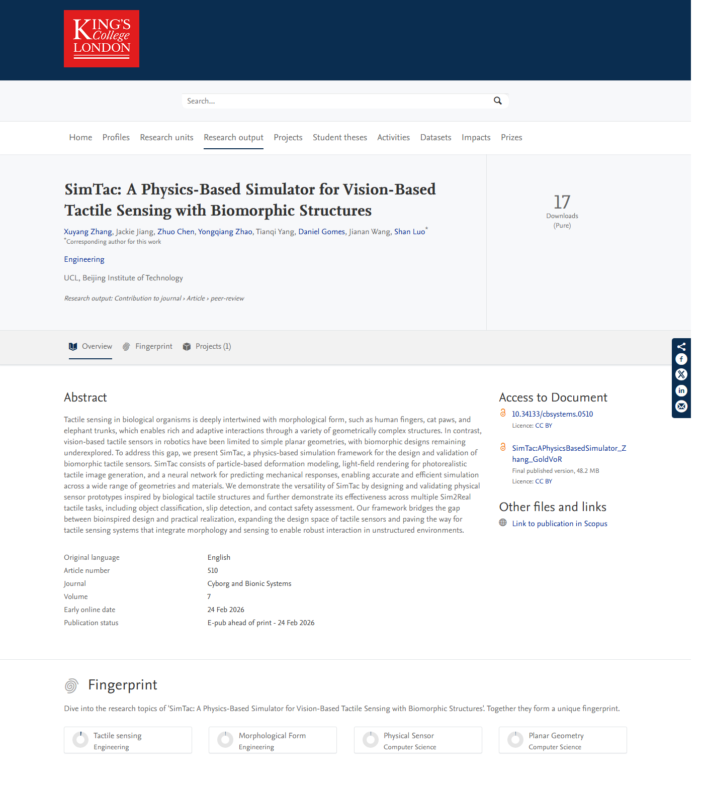
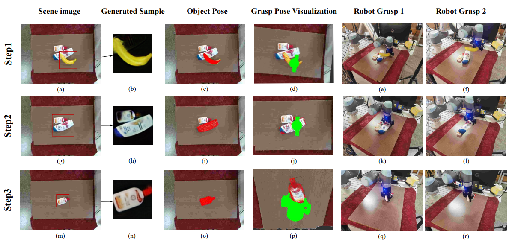
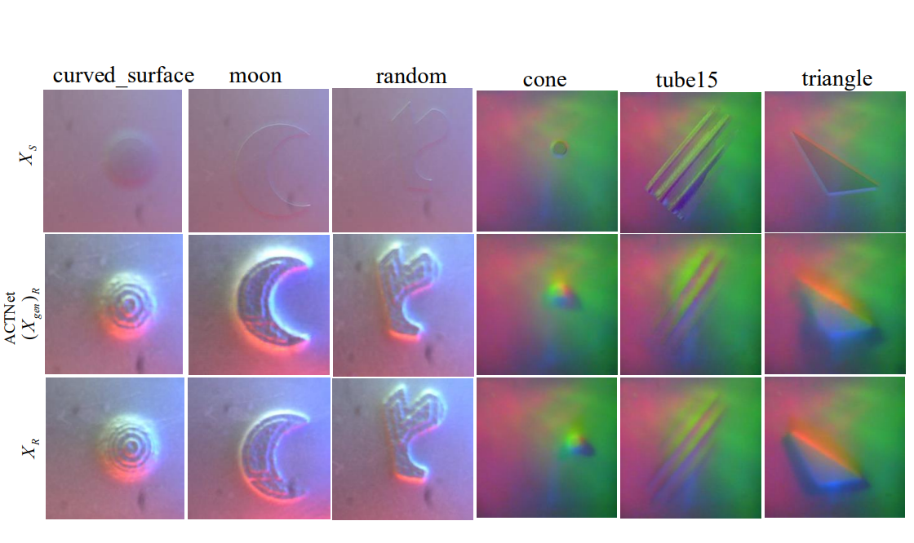
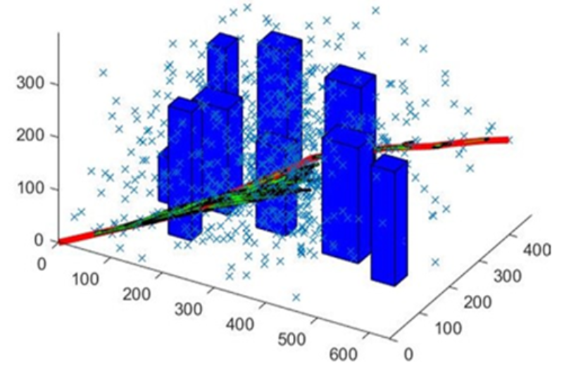
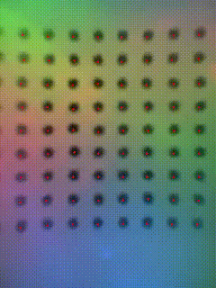

Yongqiang Zhao 赵永强
I am a PhD student in the Department of Engineering at King's College London.
I work with Prof. Shan Luo
and my research focuses on machine perception for robot interaction, especially visual-tactile perception for dexterous manipulation.
Before joining King's, I received both my Bachelor's and Master's degrees from Southeast University under the guidance of
Prof. Kun Qian.
Recent News
- [2026/03] Visual-Tactile Peg-in-Hole Assembly Learning from Peg-out-of-Hole Disassembly was published in IEEE Robotics and Automation Letters.
- [2026/03] ViTac-Tracing: Visual-Tactile Imitation Learning of Deformable Object Tracing was accepted by ICRA 2026.
- [2026/01] Training Tactile Sensors to Learn Force Sensing from Each Other was published in Nature Communications.
- [2025/Summer] I was a leading developer and organizer of the Third London Summer School in Robotics and AI, including the visual-tactile grasping mini-hackathon using LeRobot SO-ARM101.
- [2024/04] FOTS: A Fast Optical Tactile Simulator for Sim2Real Learning of Tactile-guided Robot Manipulation Skills was published in IEEE Robotics and Automation Letters.
- [2023/02] Skill Generalization of Tubular Object Manipulation with Tactile Sensing and Sim2Real Learning was published in Robotics and Autonomous Systems.
Papers
Visual-Tactile Peg-in-Hole Assembly Learning from Peg-out-of-Hole Disassembly
IEEE Robotics and Automation Letters, 2026
ViTac-Tracing: Visual-Tactile Imitation Learning of Deformable Object Tracing
IEEE International Conference on Robotics and Automation, accepted, 2026

ViTacGen: Robotic Pushing with Vision-to-Touch Generation
IEEE Robotics and Automation Letters, accepted/in press, 2025
ConViTac: Aligning Visual-Tactile Fusion with Contrastive Representations
IEEE/RSJ International Conference on Intelligent Robots and Systems, 2025


Training Tactile Sensors to Learn Force Sensing from Each Other
Nature Communications, published January 28, 2026

FOTS: A Fast Optical Tactile Simulator for Sim2Real Learning of Tactile-guided Robot Manipulation Skills
IEEE Robotics and Automation Letters, 2024


Pixel-Level Domain Adaptation for Real-to-Sim Object Pose Estimation
IEEE Transactions on Cognitive and Developmental Systems, 2023

Unsupervised Adversarial Domain Adaptation for Sim-to-Real Transfer of Tactile Manipulation Skills
ICRA 2023 ViTac Workshop

Paper list updated using public records associated with your Google Scholar profile, primarily King's College London Pure entries when Scholar itself could not be fetched directly.
Projects

Tactile Foundation Models for Robot Manipulation
Dec. 2025 - Present
Visual-Tactile Imitation Learning of Deformable Object Manipulation
Mar. 2025 - Sep. 2025
Tactile Simulation and Sim-to-Real Skill Learning
Jan. 2024 - Mar. 2026